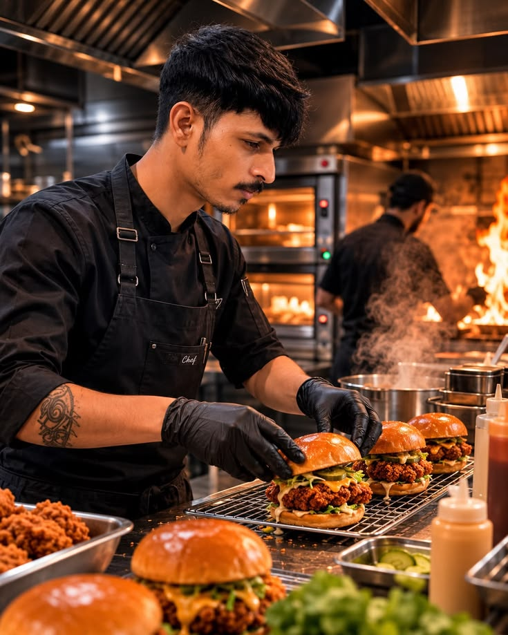

Como tudo começou
A Burguer House nasceu em 2020 a partir do sonho de dois amigos apaixonados por culinária e pela cultura do verdadeiro hambúrguer na brasa. Cansados de lanches industriais e sem personalidade, decidimos criar receitas próprias na garagem de casa.
Com o tempo, os amigos foram chamando mais amigos e o espaço ficou pequeno. Foi assim que abrimos nossa primeira loja física: um ambiente rústico, moderno, aconchegante e com cheirinho irresistível de carne grelhada.
Hoje, nossa missão diária continua a mesma do primeiro dia: selecionar carnes nobres de primeira linha, moer diariamente na casa, assar na brasa viva e servir os pães mais macios e molhos especiais feitos artesanalmente.

Nossos Pilares
Nossa Missão
Proporcionar experiências gastronômicas marcantes, servindo hambúrgueres artesanais de altíssima qualidade em um ambiente acolhedor e com preço justo.
Nossa Visão
Ser a hamburgueria mais amada da região, reconhecida pela excelência no atendimento, padrão artesanal e inovação constante em nossos sabores.
Nossos Valores
Ingredientes sempre frescos, respeito incondicional aos clientes, transparência, higiene impecável e amor verdadeiro pela boa gastronomia.